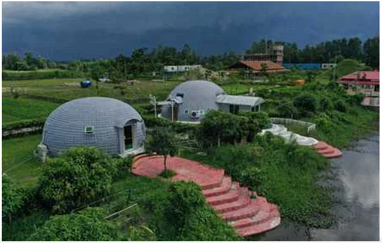

বেনজীরের রিসোর্টের সামনে পুলিশের বিরুদ্ধে স্থানীয়দের লাঠিপেটার অভিযোগ

গোপালগঞ্জ সদর এলাকায় পুলিশের সাবেক মহাপরিদর্শক (আইজিপি) বেনজীর আহমেদের মালিকানাধীন সাভানা
ইকোরিসোর্ট অ্যান্ড ন্যাচারাল পার্কের সামনে স্থানীয়দের ওপর পুলিশের হামলার অভিযোগ পাওয়া গেছে। শনিবার সন্ধ্যার
পরপর এ ঘটনায় চারজন যুবক আহত হয়েছেন বলে দাবি স্থানীয় বাসিন্দাদের। তাঁরা জানান, গণমাধ্যমে বেনজীর
আহমেদের বিরুদ্ধে সম্পত্তির দখলের বিষয়ে কথা বলায় পুলিশ তাঁদের ওপর লাঠিপেটা করে।
এদিকে পুলিশ বলছে, সাভানা ইকোরিসোর্ট অ্যান্ড ন্যাচারাল পার্কের সামনে দোকানে স্থানীয় কিছু লোক ভয়ভীতি দেখাচ্ছে।
ওই এলাকায় জুয়া খেলছে এবং হইচই করছে। এতে ওই পার্কের দায়িত্বে থাকা কর্মচারীরা নিরাপত্তাহীনতায় ভুগছেন। এমন
খবর পেয়ে সন্ধ্যার পর গোপালগঞ্জের বৌলতলী ফাঁড়ির পুলিশ সদস্যরা সেখানে যান। জুয়ার আড্ডায় থাকা মানুষজনকে
সরাতে দৌড়ানি দেওয়া হয়। এ সময় একজন পড়ে গিয়ে ব্যথা পেয়েছে।
গোপালগঞ্জ সদর থানার ভারপ্রাপ্ত কর্মকর্তা মোহাম্মদ আনিচুর রহমান বলেন, ওই এলাকায় পুলিশ লাঠিপেটা করেছে, এমন
কোনো ঘটনা তাঁকে কেউ জানাননি।প ্রত্যক্ষদর্শীকয়েকজনের বরাতে জানা যায়, পুলিশের লাঠির আঘাতে চারজন আহত
হয়েছেন। তাঁরা হলেন ইকোপার্ক–সংলগ্ন সাহাপুর ইউনিয়নের বৈরাগীটোল গ্রামের বিনোদ বিহারি বলের ছেলে বিপ্লব বল,
সন্তোষ বলের ছেলে সঞ্জয় বল ও সাগর বল এবং ওই এলাকার রনি নামের এক যুবক।
|